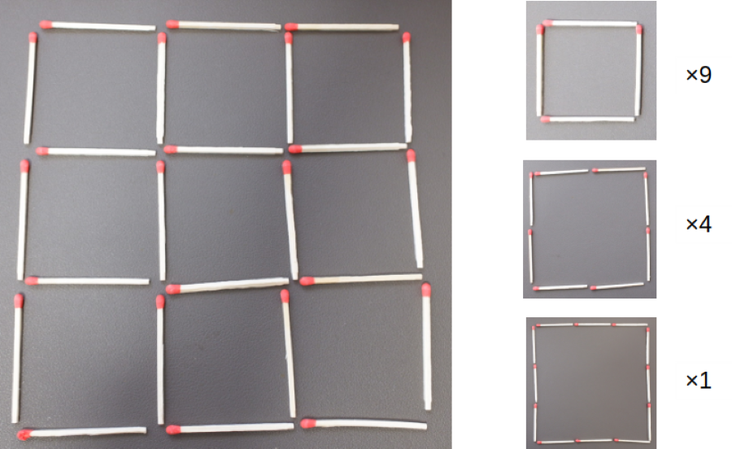
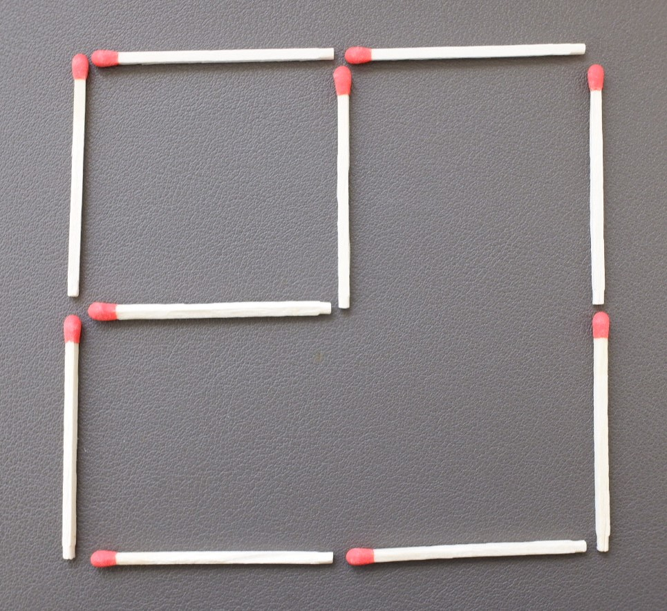
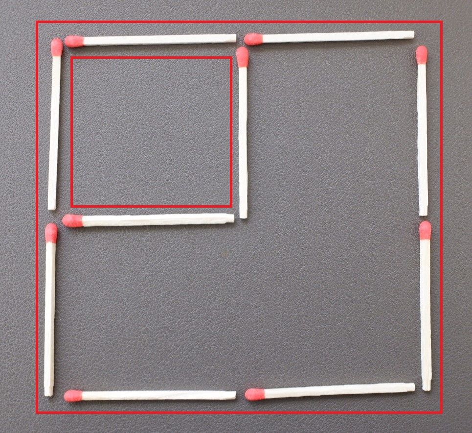
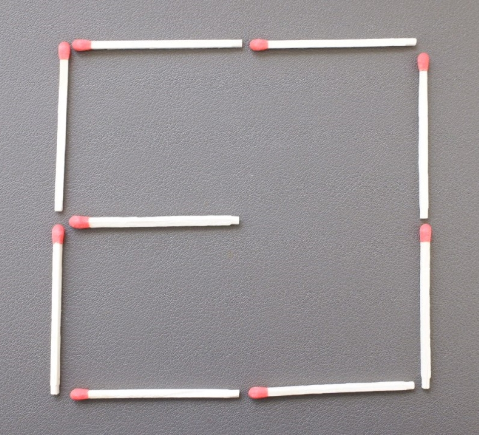
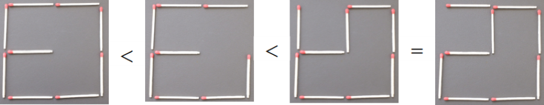
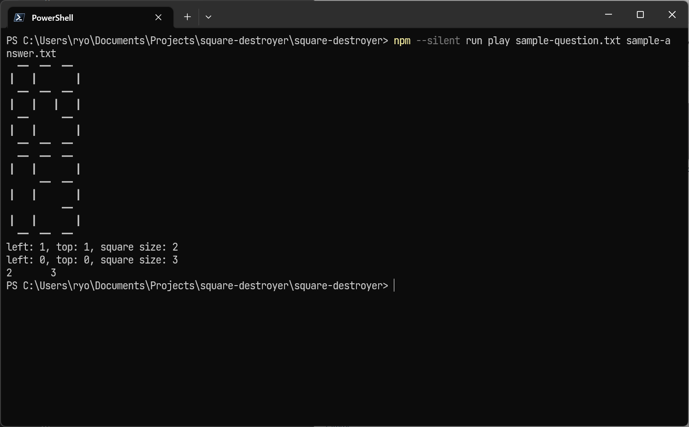

正方形を壊し尽くせ！
マッチ棒が格子状に並んでいます。できるだけ多くの正方形を、できるだけ少ない数のマッチ棒の除去で破壊してください。

ルール
格子の中には様々なサイズの多数の正方形が含まれています。

あなたのプログラムに与えられる問題では、格子のサイズが様々で、最初からいくつかのマッチ棒が取り除かれています。

この問題には、まだ正方形が残っています。

マッチ棒を取り除いて、できるだけ多くの正方形を壊してください。

壊した正方形の数が多いほうが良い解答で、壊した正方形の数が同じであれば取り除いたマッチ棒の本数が少ない方が良い解答です。

他の参加者が作成する様々な問題に対して、できるだけ良い解答を出力するプログラムを作成してください。
入力データ
以下に、入力データの具体例を示します（#以降はコメントです。入力データに含めないようにしてください）。
3 # 格子の大きさ（この例では3なので、3×3の格子になります）
5 # 最初から取り除かれているマッチ棒のインデックス
15 # 同上
19 # 同上マッチ棒のインデックスは、以下の順になります。

- 格子の大きさは、1以上128以下としてください。
- 格子の大きさがnの場合、マッチ棒のインデックスは0以上2×(n×(n＋1))未満としてください。
- 取り除くマッチ棒のインデックスが重複しないようにしてください。
- 取り除くマッチ棒のインデックスの件数は、許された範囲内の値で重複がないのであれば、何本でも（0本でも）構いません。
出力データ
以下に、出力データの具体例を示します（#以降はコメントです。入力データに含めないようにしてください）。
7 # 最初から取り除かれているマッチ棒のインデックス
12 # 同上
14 # 同上マッチ棒のインデックスは、入力データと同じです。
入力データで既に取り除かれているマッチ棒のインデックスが含まれていても、入力データの格子のサイズから許されない値でも構いません。しかし、そのような実際にはマッチ棒が取り除かれない場合でも、取り除いたマッチ棒としてカウントします。
作成していただくプログラム
作成していただくプログラムは、以下の制限を満たしてください。
- Windows 10 64bitで動作可能にしてください
- 有償のライブラリやプログラミング言語は使用しないでください
- プログラムの起動〜終了の時間を15秒以内にしてください
コマンドラインでのスコアの確認
作成したプログラムの出力が正しいかをWebブラウザで確認するのが面倒な場合は、課題確認（ソース・コード）を使用してみてください。
使用したプログラミング言語はJavaScriptで、node.js上で動作します。node.jsをインストール（18.16.0
LTSで動作検証しています）し、課題確認（ソース・コード）を適当なフォルダに展開し、コマンドプロンプト上でそのフォルダに移動し、npm installしてください。
コマンドプロンプトでnpm --silent run play 問題ファイル 解答ファイルを実行すれば、標準出力に残っている正方形の数\t取り除いたマッチ棒の数が出力されます。

評価方法
本課題では、問題単位に以下で順位を付けます。
- 残っている正方形の数が少ない順
- 残っている正方形の数が同じ場合は、取り除いたマッチ棒の数が少ない順
順位に応じて、以下でポイントを配分します。
| 1位 | 2位 | 3位 | 4位 | 5位 | 6位 | 7位 | 8位 | 9位 | 10位 | 11位 | 12位 | 13位 | 14位 | 15位以下 |
|---|---|---|---|---|---|---|---|---|---|---|---|---|---|---|
| 25 | 20 | 16 | 13 | 11 | 10 | 9 | 8 | 7 | 6 | 5 | 4 | 3 | 2 | 1 |
順位は、自分よりも良い解答を出した参加者の数＋1です。1位が2人いる場合、次の参加者は3位になります。
同じ順位の参加者が複数いる場合は、ポイントを等分します。1位が2人なら(25＋20)÷2、3人なら(25＋20＋16)÷3になります。
出力データのフォーマットにエラーがあったりプログラムの起動〜終了の時間が15秒を超えたりした場合は失格となり、その問題のポイントは0になります。
獲得したポイントの合計で最終順位を決定します。獲得したポイントの合計が同じ参加者が複数いる場合は、総実行時間が少ない参加者を上位とします。
試合形式
問題を解くプログラムと問題をセットにして提出してください。参加者それぞれのプログラムが、自身を含む参加者全員の問題を解きます。
問題が提出されなかった場合、フォーマットにエラーがあった場合、他の参加者と同一の問題が提出された場合、その他運営に何らかの支障があるとオブザーバーが判断した場合は、これらに該当する問題と同数の問題をオブザーバーが作成し、該当する問題のかわりに出題します。また、参加者の人数が少ない場合も、オブザーバーが問題を作成して追加します。
進行手順
本コンクールでは、練習試合と公式試合を、それぞれ1回実施します。
練習試合は提出形式やプログラムの動作を参加者が確認するために実施するもので、選考には影響しません。練習試合の結果は、実行時間とプログラムの出力（失格時は失格理由）、問題毎の順位をプログラムの作成者にのみ公開します。また、参考のために、各問題における1位の結果を参加者全員に公開します。
各試合は、以下のPCで、ネットワークから遮断した状態で実施します。
- OS: Windows 11 Professional 64bit
- CPU: Interl Core i7-1165G7
- メモリ: 32GB
コミュニケーション
プログラミング・コンクールの目的は「NULグループにおける開発力の向上および、参加者どうしの相互啓発を図る」です。
課題のポイントを理解し、ポイントに沿う形で自身の作品の優秀さを主張してください。プログラミング・コンクールに参加する人と作品に敬意を払い、理解しあい、互いの優秀なスキルを共有してください。
参加者全員が「相互啓発を図る」ために、課題についての質問や意見は参加者全員で対応することとします。参加者は以下の事項を守ってください。
- 課題についての質問は、後述するTeamsに投稿/回答してください。
- 質問や回答に意見のある場合も、Teamsを使用してください。個人宛ての質問や意見は不可とします。
Teams
コミュニケーション媒体としてTeamsに「プロコン参加者サイト」チームを用意しますので、ご活用ください。「◯◯技術についてオブザーバーが解説しろ」とかの投稿も大歓迎です。ただ、オブザーバーの能力不足で解説できない場合は、申し訳ありません、相互啓発ということで参加者の皆様のご協力をお願いするかもしれません……。
- 事務局が、参加者とオブザーバーをメンバー登録します。メンバーは、課題1と課題2のどちらのチャンネルにも参加することができます。
- 各課題の質問や連絡は各課題のチャンネルに投稿してください。
- 投稿するとき、「@」を付けてメンションするとメンバーに通知することができます。「@q1」は課題1のメンバー全員に、「@q2」は課題2のメンバー全員にメンションが届きます。
- 過去の投稿は遡って確認できます。途中から参加した方は、過去の投稿も確認するようにしてください。